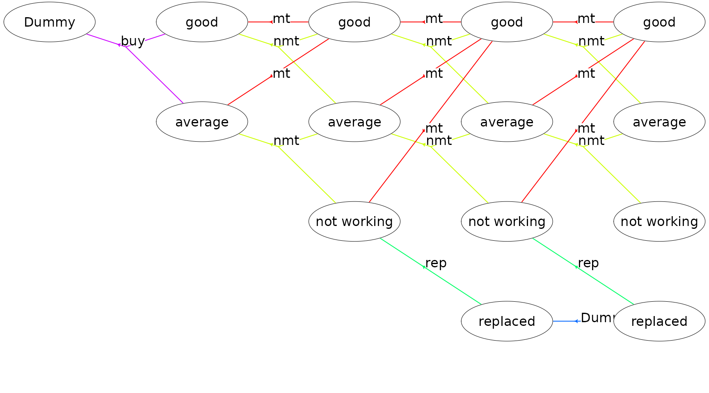
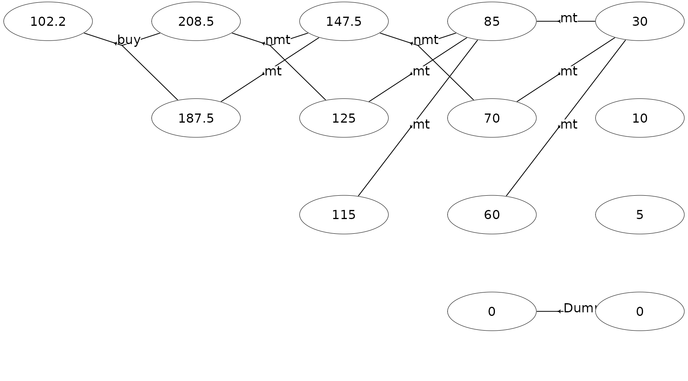

Solving a finite-horizon semi-MDP
Lars Relund lars@relund.dk
2023-01-29
Source:vignettes/finite-mdp.Rmd
finite-mdp.RmdThe MDP2 package in R is a package for solving Markov
decision processes (MDPs) with discrete time-steps, states and actions.
Both traditional MDPs (Puterman 1994),
semi-Markov decision processes (semi-MDPs) (Tijms
2003) and hierarchical-MDPs (HMDPs) (Kristensen and Jørgensen 2000) can be solved
under a finite and infinite time-horizon.
The package implement well-known algorithms such as policy iteration
and value iteration under different criteria e.g. average reward per
time unit and expected total discounted reward. The model is stored
using an underlying data structure based on the state-expanded
directed hypergraph of the MDP (Nielsen and
Kristensen (2006)) implemented in C++ for fast
running times.
Building and solving an MDP is done in two steps. First, the MDP is built and saved in a set of binary files. Next, you load the MDP into memory from the binary files and apply various algorithms to the model.
For building the MDP models see vignette("building"). In
this vignette we focus on the second step, i.e. finding the optimal
policy. Here we consider a finite-horizon semi-MDP.
A finite-horizon semi-MDP
A finite-horizon semi-MDP considers a sequential decision problem over \(N\) stages. Let \(I_{n}\) denote the finite set of system states at stage \(n\). When state \(i \in I_{n}\) is observed, an action \(a\) from the finite set of allowable actions \(A_n(i)\) must be chosen, and this decision generates reward \(r_{n}(i,a)\). Moreover, let \(\tau_n(i,a)\) denote the stage length of action \(a\), i.e. the expected time until the next decision epoch (stage \(n+1\)) given action \(a\) and state \(i\). Finally, let \(p_{ij}(a,n)\) denote the transition probability of obtaining state \(j\in I_{n+1}\) at stage \(n+1\) given that action \(a\) is chosen in state \(i\) at stage \(n\).
Example
Consider a small machine repair problem used as an example in Nielsen and Kristensen (2006) where the machine is always replaced after 4 years. The state of the machine may be: good, average, and not working. Given the machine’s state we may maintain the machine. In this case the machine’s state will be good at the next decision epoch. Otherwise, the machine’s state will not be better at next decision epoch. When the machine is bought it may be either in state good or average. Moreover, if the machine is not working it must be replaced.
The problem of when to replace the machine can be modeled using a
Markov decision process with \(N=5\)
decision epochs. We use system states good,
average, not working and dummy state
replaced together with actions buy (buy),
maintain (mt), no maintenance (nmt), and
replace (rep). The set of states at stage zero \(S_{0}\) contains a single dummy state
dummy representing the machine before knowing its initial
state. The only possible action is buy.
The cost of buying the machine is 100 with transition probability of
0.7 to state good and 0.3 to state average.
The reward (scrap value) of replacing a machine is 30, 10, and 5 in
state good, average and
not working, respectively. The reward of the machine given
action mt are 55, 40, and 30 in state good,
average and not working, respectively.
Moreover, the system enters state 0 with probability 1 at the next
stage. Finally, the reward, transition states and probabilities given
action \(a=\)nmt are given
by:
| \(n:s\) |
\(1:\)
good
|
\(1:\)
average
|
\(2:\)
good
|
\(2:\)
average
|
\(3:\)
good
|
\(3:\)
average
|
|---|---|---|---|---|---|---|
| \(r_n(i,a)\) | 70 | 50 | 70 | 50 | 70 | 50 |
| \(j\) | \(\{0,1\}\) | \(\{1,2\}\) | \(\{0,1\}\) | \(\{1,2\}\) | \(\{0,1\}\) | \(\{1,2\}\) |
| \(p_{ij}(a,n)\) | \(\{0.6,0.4\}\) | \(\{0.6,0.4\}\) | \(\{0.5,0.5\}\) | \(\{0.5,0.5\}\) | \(\{0.2,0.8\}\) | \(\{0.2,0.8\}\) |
Let us try to load the model and get some info:
prefix <- paste0(system.file("models", package = "MDP2"), "/machine1_")
mdp <- loadMDP(prefix)#> Read binary files (0.000171799 sec.)
#> Build the HMDP (4.58e-05 sec.)#> Checking MDP and found no errors (1.2e-06 sec.)
getInfo(mdp, withList = F, dfLevel = "action", asStringsActions = TRUE) #> $df
#> # A tibble: 18 × 8
#> sId stateStr label aIdx label_action weights trans pr
#> <dbl> <chr> <chr> <dbl> <chr> <chr> <chr> <chr>
#> 1 4 3,0 good 0 mt 55 0 1
#> 2 4 3,0 good 1 nmt 70 0,1 0.2,0.8
#> 3 5 3,1 average 0 mt 40 0 1
#> 4 5 3,1 average 1 nmt 50 1,2 0.2,0.8
#> 5 6 3,2 not working 0 mt 30 0 1
#> 6 6 3,2 not working 1 rep 5 3 1
#> 7 7 3,3 replaced 0 Dummy 0 3 1
#> 8 8 2,0 good 0 mt 55 4 1
#> 9 8 2,0 good 1 nmt 70 4,5 0.5,0.5
#> 10 9 2,1 average 0 mt 40 4 1
#> 11 9 2,1 average 1 nmt 50 5,6 0.5,0.5
#> 12 10 2,2 not working 0 mt 30 4 1
#> 13 10 2,2 not working 1 rep 5 7 1
#> 14 11 1,0 good 0 mt 55 8 1
#> 15 11 1,0 good 1 nmt 70 8,9 0.6,0.4
#> 16 12 1,1 average 0 mt 40 8 1
#> 17 12 1,1 average 1 nmt 50 9,10 0.6,0.4
#> 18 13 0,0 Dummy 0 buy -100 11,12 0.7,0.3The state-expanded hypergraph representing the semi-MDP with finite time-horizon can be plotted using
plot(mdp, hyperarcColor = "label", radx = 0.06, marX = 0.065, marY = 0.055)
Each node corresponds to a specific state and a directed hyperarc is
defined for each possible action. For instance, action mt
(maintain) corresponds to a deterministic transition to state
good and action nmt (not maintain) corresponds
to a transition to a condition/state not better than the current
condition/state. We buy the machine in stage 1 and may choose to replace
the machine.
Let us use value iteration to find the optimal policy maximizing the expected total reward:
scrapValues <- c(30, 10, 5, 0) # scrap values (the values of the 4 states at the last stage)
runValueIte(mdp, "Net reward", termValues = scrapValues)#> Run value iteration with epsilon = 0 at most 1 time(s)
#> using quantity 'Net reward' under reward criterion.
#> Finished. Cpu time 7.7e-06 sec.The optimal policy is:
#> # A tibble: 6 × 6
#> sId stateStr stateLabel aIdx actionLabel weight
#> <dbl> <chr> <chr> <int> <chr> <dbl>
#> 1 8 2,0 good 1 nmt 148.
#> 2 9 2,1 average 0 mt 125
#> 3 10 2,2 not working 0 mt 115
#> 4 11 1,0 good 1 nmt 208.
#> 5 12 1,1 average 0 mt 188.
#> 6 13 0,0 Dummy 0 buy 102.
plot(mdp, hyperarcShow = "policy", nodeLabel = "weight",
radx = 0.06, marX = 0.065, marY = 0.055)
Note given the optimal policy the total expected reward is 102.2 and
the machine will never make a transition to states
not working and replaced.
We may evaluate a certain policy, e.g. the policy always to maintain the machine:
policy<-data.frame(sId=c(8,11), aIdx=c(0,0)) # set the policy for sId 8 and 11 to mt
setPolicy(mdp, policy)
getPolicy(mdp)#> # A tibble: 14 × 6
#> sId stateStr stateLabel aIdx actionLabel weight
#> <dbl> <chr> <chr> <int> <chr> <dbl>
#> 1 0 4,0 good -1 "" 30
#> 2 1 4,1 average -1 "" 10
#> 3 2 4,2 not working -1 "" 5
#> 4 3 4,3 replaced -1 "" 0
#> 5 4 3,0 good 0 "mt" 85
#> 6 5 3,1 average 0 "mt" 70
#> 7 6 3,2 not working 0 "mt" 60
#> 8 7 3,3 replaced 0 "Dummy" 0
#> 9 8 2,0 good 0 "mt" 148.
#> 10 9 2,1 average 0 "mt" 125
#> 11 10 2,2 not working 0 "mt" 115
#> 12 11 1,0 good 0 "mt" 208.
#> 13 12 1,1 average 0 "mt" 188.
#> 14 13 0,0 Dummy 0 "buy" 102.If the policy specified in setPolicy does not contain
all states then the actions from the previous optimal policy are used.
In the output above we can see that the policy now is to maintain
always. However, the reward of the policy has not been updated. Let us
calculate the expected reward:
runCalcWeights(mdp, "Net reward", termValues = scrapValues)
tail(getPolicy(mdp)) #> # A tibble: 6 × 6
#> sId stateStr stateLabel aIdx actionLabel weight
#> <dbl> <chr> <chr> <int> <chr> <dbl>
#> 1 8 2,0 good 0 mt 140
#> 2 9 2,1 average 0 mt 125
#> 3 10 2,2 not working 0 mt 115
#> 4 11 1,0 good 0 mt 195
#> 5 12 1,1 average 0 mt 180
#> 6 13 0,0 Dummy 0 buy 90.5That is, the expected reward is 90.5 compared to 102.2 which was the reward of the optimal policy.